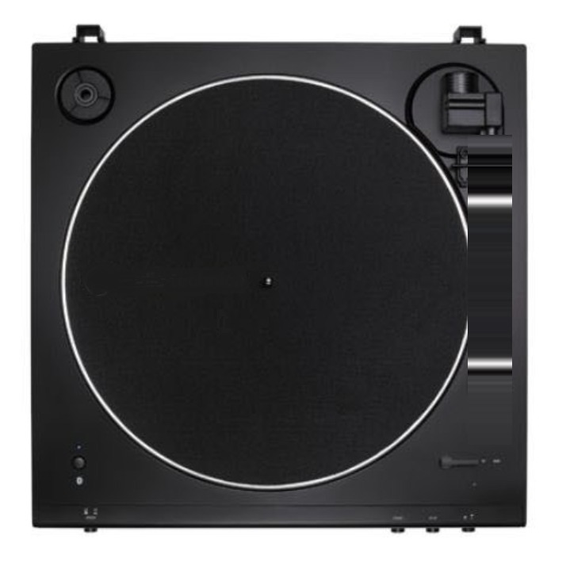

VINYL HI-FI
음악을 선택해주세요
아티스트
앨범 정보
내 저장소 음악
스캔 버튼을 눌러 로컬 음원을 불러오세요.
유튜브 및 웹 음원 스트리밍
인기 추천 플레이리스트
음원 스트리밍 사이트 연동
각 음원 사이트의 공식 웹 플레이어에 접속하여 로그인하고 음악을 들으실 수 있습니다.
YouTube Music
구글 계정으로 로그인하여 나만의 맞춤 재생목록과 믹스를 즐기세요.
Melon (멜론)
카카오/멜론 계정으로 로그인하여 TOP 100 차트 및 스트리밍을 이용하세요.
Bugs (벅스)
페이코/벅스 계정으로 로그인하여 고음질 FLAC 및 인기 음악을 감상하세요.
Tidal (타이달)
Tidal 계정으로 로그인하여 Hi-Fi 및 Master 고음질 스트리밍을 즐기세요.
자주 듣는 음악 (Top Played)
내가 가장 많이 들은 곡들을 모아서 연속 재생합니다.